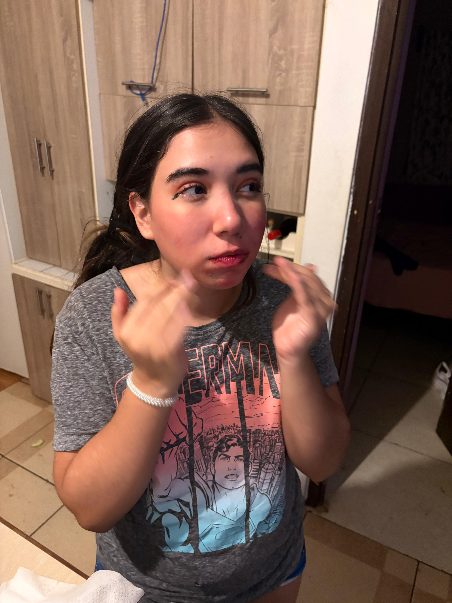
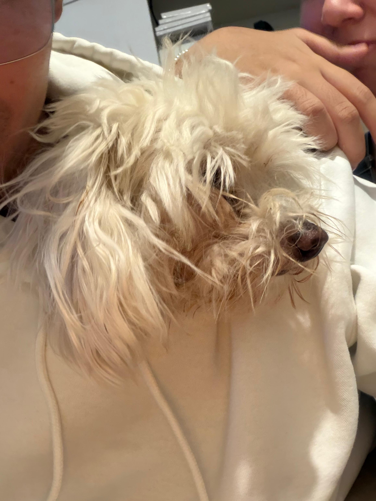
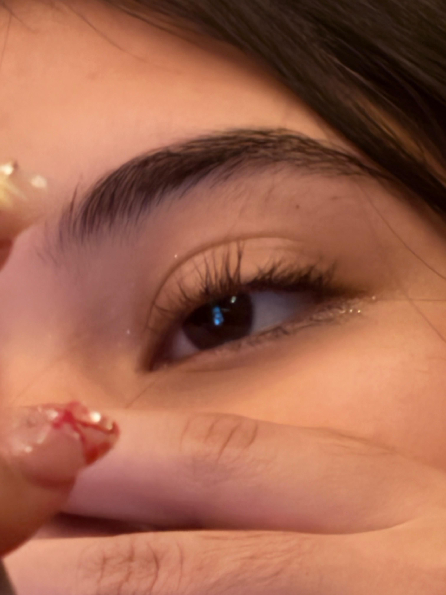
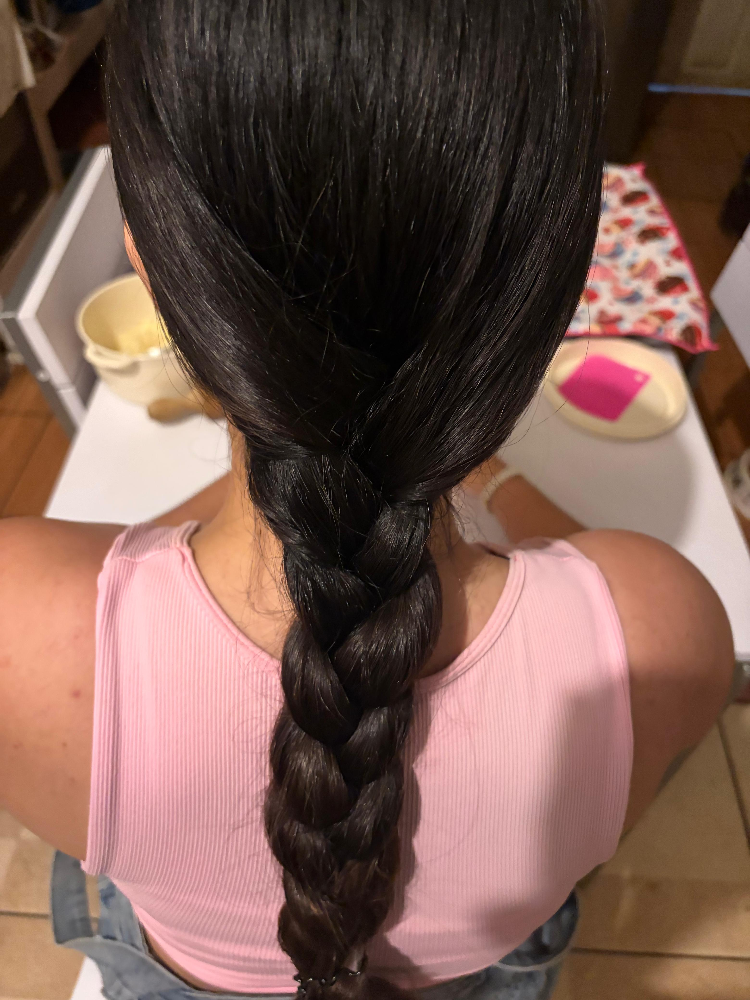
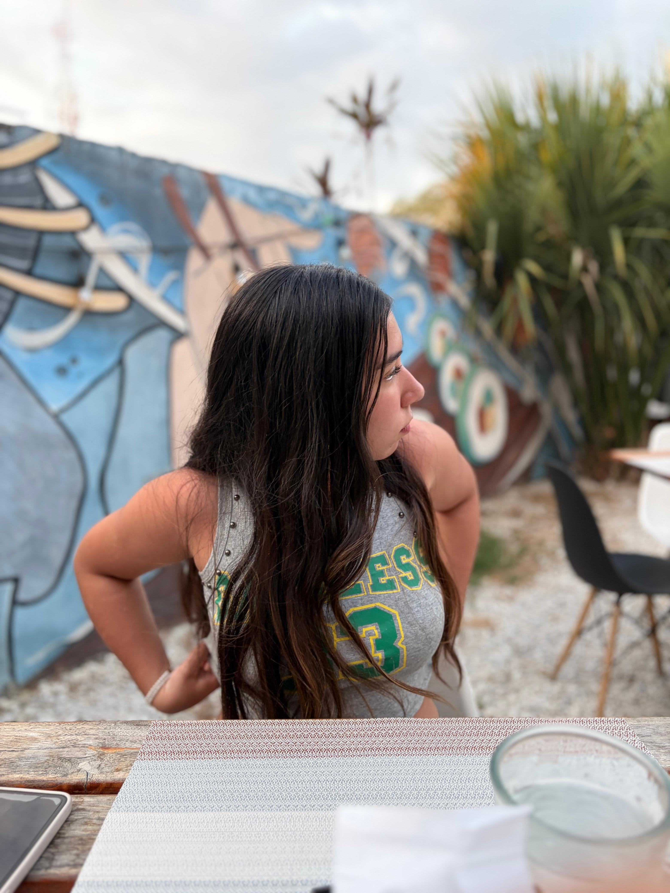
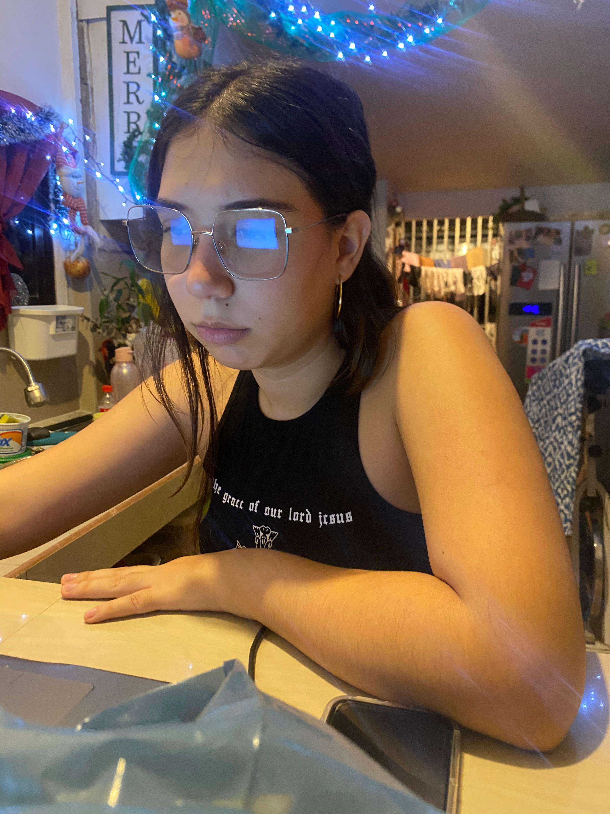
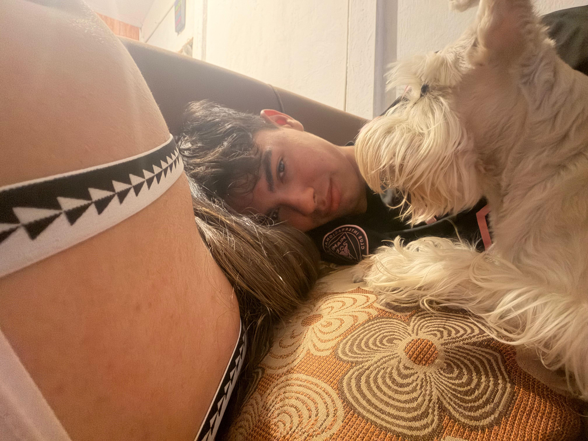
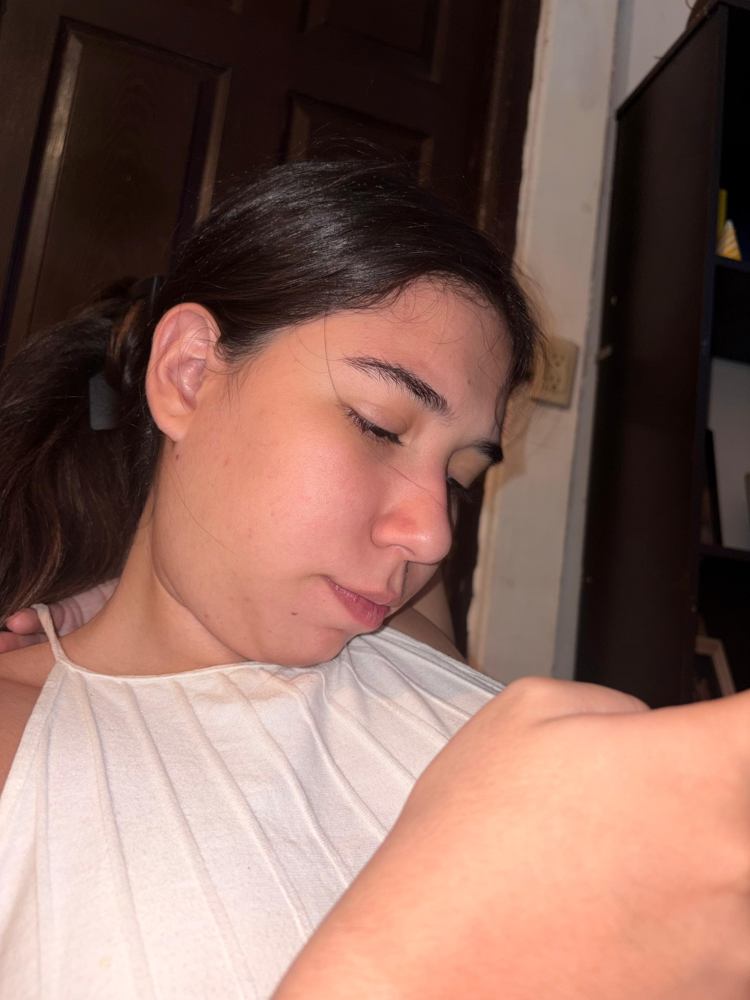
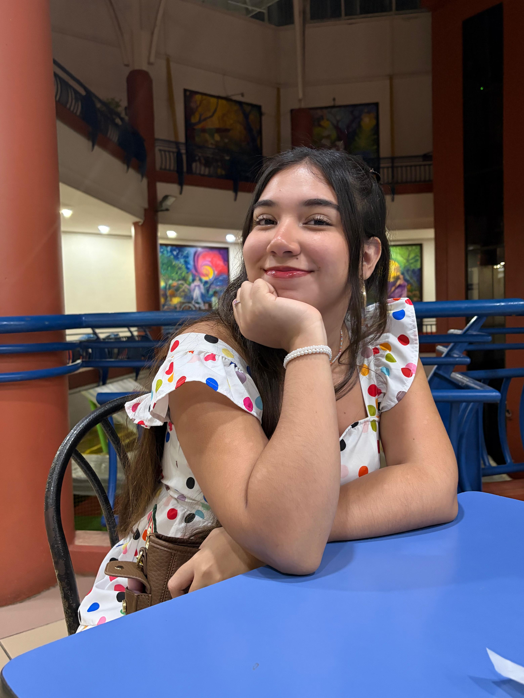

01
Un texto pequeño
Esto también es una forma de decir te amo.
No quería que esta página fuera solo fotos. Quería que al bajarla se sintiera como caminar por recuerdos: primero suave, luego más vivo, y al final con algo que se quede sonando bonito.
Tres momentos
Bajando aparecen una por una.
02
Lo nuestro

03
Seguir
Galería 3D
Fotos que se abren como recuerdo.
Desliza, usa las flechas o toca una foto. Al tocarla se abre grande con su mensaje encima.
01 / 14
Recuerdo 01La primera sonrisa

Recuerdo 02Tu forma de mirar
Recuerdo 03Lo que me gusta

Recuerdo 04Una salida cualquiera

Recuerdo 05Detalles pequeños
Recuerdo 06Lo nuestro

Recuerdo 07Un día bonito
Recuerdo 08Cerca de usted

Recuerdo 09La parte divertida
Recuerdo 10Seguir eligiendo

Recuerdo 11Su luz
Recuerdo 12Mi favorita de hoy

Recuerdo 13Un pedacito más

Recuerdo 14Todo lo que sigue
Toca cualquier foto para abrirla con su texto.
01 / 04
Video 01
Esto se mueve como recuerdo.
Hay cosas que una foto deja quietas, pero un video las vuelve a prender. Este espacio queda para eso: para recordar movimiento, voces, risas, salidas y pedacitos que me hacen pensar en usted.
Siempre
Te amo.
Y si esta página cambia, crece o se llena de más recuerdos, que sea porque seguimos sumando cosas bonitas.